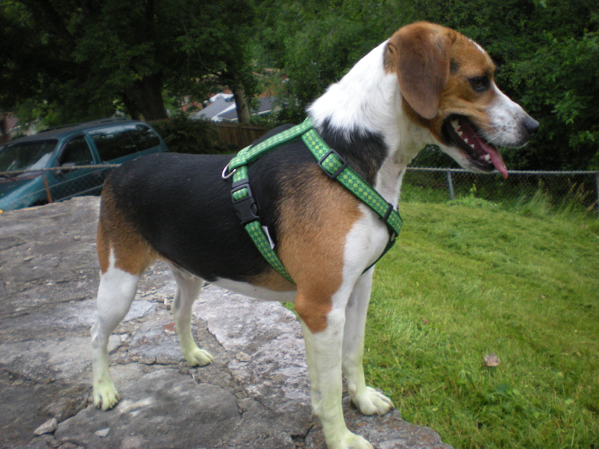
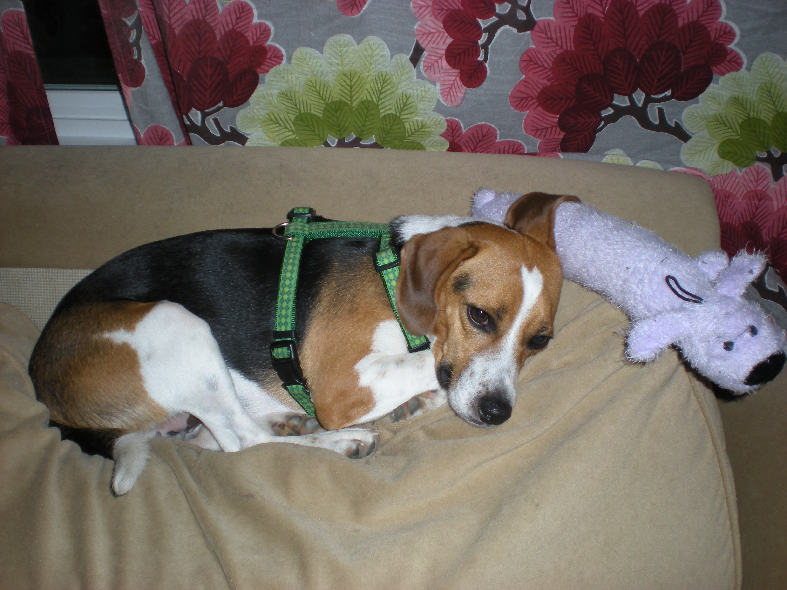
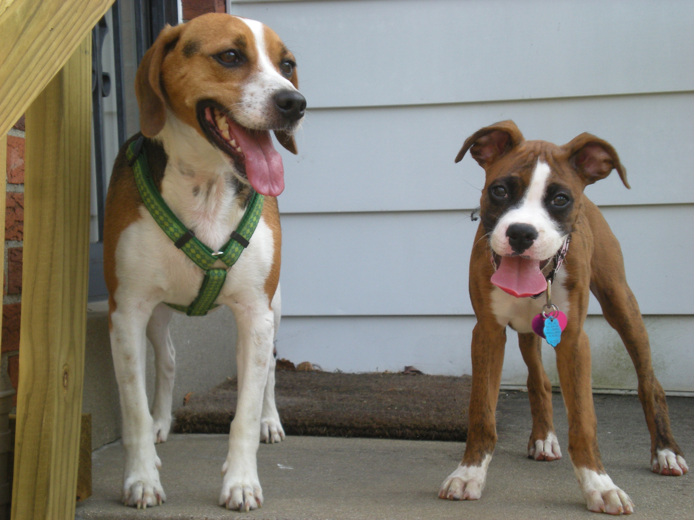

Owen's first day at his new home!
Owen was an abandoned dog found by a teacher in Audubon Park. He was given to Carrie where he live until his death on Sept. 3, 2021
-

Owen in his prime!
Owen enjoying his backyard where he wandered, escaped, and roamed for his enjoyment.
-

Owen Snuggled up on the couch!
Owen was a creature of comfort and always liked to snuggle in beds/couches/doggy beds, anywhere he could find a nice warm and inviting place. He was not one for toys though...
-

Owen with his buddy Skittles the Boxer puppy!
Owen was indifferent to most dogs and kept to himself. Earlier in life he would encounter dogs of friends and family but was not one to get excited about other dogs on walks or when brought into his home. He tolerated other dogs but was not keen to be with them. He preferred being with his owner and sleeping in bed with her.
Owen was a sweet, kind, and gentle Beagle. He is missed!
Owen never barked and never cried, not a whimper nor a sigh. Loving creature of comfort and hungry till the end. A beagle who always was a friend. The day he passed is the day an eye can never be dry. Leaving a hole in hearts that can never be filled.
Contact Us
Please feel free to contact us at the e-mail below to discuss any aspect of Owen or his habits and mannerisms. We would love the chance to share memories of Owen or field any questions you may have about him or his life.
OwenGOAT@yahoo.com
More About Owen
Additional pages may be added to the site with more photos of Owen. Please feel free to visit the site when you can and updated materials will be added at later dates.